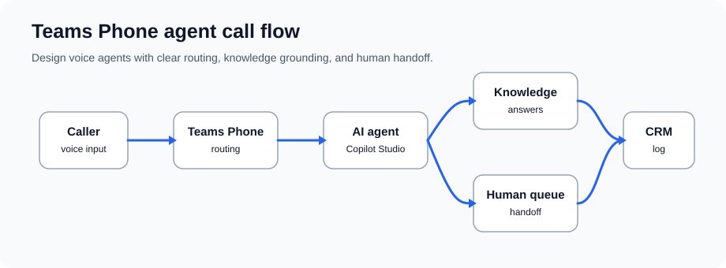

Teams Phone Agents and Custom Voice AI
Plan phone agents that help callers and hand off cleanly to people.
Plan phone agents that help callers and hand off cleanly to people.
Teams Phone agent projects usually bring several Microsoft pieces together: calling, Copilot Studio or contact-center agent design, Azure Communication Services extensibility, and Azure AI Speech for voice output. The right design depends on whether you are using Teams Phone extensibility, Dynamics 365 Contact Center, Copilot Studio voice features, or a custom bot.
In practice, start with a narrow call flow: answer common questions from approved knowledge, then transfer anything complex to a human with the conversation context attached.

Scenario: Help desk fielding support calls
Agent flow: Customer calls → AI agent asks about issue category → agent provides FAQ or troubleshooting → escalates complex issues to human agent
What good looks like: Routine calls are handled faster, repeat questions go down, and human agents get better context for escalations.
Scenario: Healthcare clinic or salon fielding appointment calls
Agent flow: Caller → AI asks appointment type and availability → checks Calendar API → confirms or offers alternatives → sends confirmation via SMS
What good looks like: Staff spend less time re-entering appointments, and callers can schedule after hours where policy allows.
Scenario: Banks, insurance companies with legacy IVR systems
Agent flow: Natural language understood (not touchtone menus) → account lookup via API → balance inquiries, payment setup, fraud alerts
What good looks like: Callers describe what they need instead of fighting through rigid menu trees.
Scenario: Sales teams qualifying inbound leads
Agent flow: Prospect calls → AI qualifies fit, budget, timeline → logs in CRM → transfers to appropriate sales rep
What good looks like: The sales team receives fit, budget, timing, and routing notes before the transfer.
Scenario: Internal IT support
Agent flow: Employee calls IT → agent troubleshoots common issues → creates tickets for complex problems → routes to specialist
What good looks like: Common requests are triaged quickly and specialist teams receive cleaner tickets.
Custom voice can help a phone agent sound consistent with your brand, but it should be planned carefully. There are two common paths:
Azure AI Speech provides high-quality neural voices in many languages and locales. Choose a supported voice, confirm pricing, and test pronunciation, latency, and SSML support for your call scenario.
Custom voice can create a unique brand voice, but it is limited access and requires responsible-use review. Plan for consent, disclosure, training, hosting, and monitoring:
Inbound Call (PSTN or Teams)
↓
Teams Phone System
↓
Copilot Studio Voice Agent
├─ Speech-to-Text (Azure Cognitive Services)
├─ Natural Language Understanding (Azure Language)
├─ Agent Logic & Context Management
├─ API Connectors (CRM, Calendar, Knowledge Base)
└─ Text-to-Speech (Custom or Pre-built Voice)
↓
Human Transfer (if needed)
↓
CRM Logging & Compliance Recording
You can choose how to disclose it, but be direct. A simple opening such as "Thanks for calling, you're speaking with our AI assistant" is usually better than making callers guess.
Pre-built neural voices have multiple accent options. Custom voice can be tailored to specific accent or dialect.
Not as a blanket rule. Requirements depend on whether you use Teams Phone extensibility, ACS, Copilot Studio voice capabilities, Dynamics 365 Contact Center, or another certified contact-center path. Confirm licensing and preview/GA status before buying.
Yes — agents can detect language, respond in customer's language, or transfer to multilingual human agent.
Agents can be configured with real-time captioning, TTY support, and relay service integration.
The agent should pass the summary, issue category, steps already tried, and transfer reason to the queue or contact-center screen.
Use these Microsoft pages to confirm calling extensibility, Copilot Studio voice-agent availability, and voice synthesis requirements.
Download our phone agent deployment playbook and learn from real case studies.
Get Phone Agent Playbook